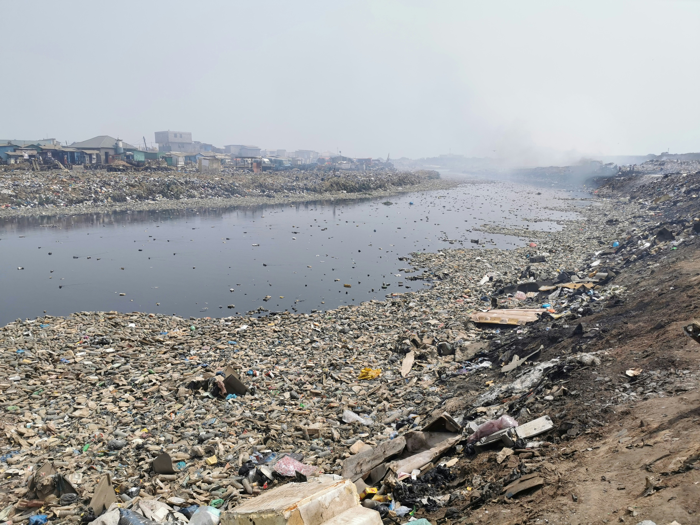

O que é Poluição?
A poluição é a introdução de substâncias ou agentes poluentes no meio ambiente, provocando efeitos negativos nos ecossistemas e na saúde humana. Ela pode ocorrer em diversos ambientes e de várias formas, sendo uma das maiores ameaças ao desenvolvimento sustentável e à qualidade de vida.
Segundo a Organização Mundial da Saúde (OMS), mais de 90% da população mundial respira ar poluído. A poluição também compromete o abastecimento de água potável, degrada solos e afeta a biodiversidade.
Vídeo Educativo
Poluição do Ar
A poluição atmosférica é causada por emissões de veículos, indústrias, queimadas, liberação de gases tóxicos e partículas em suspensão. Pode provocar doenças respiratórias, cardiovasculares e até câncer.
Leia mais em IBGE Explica.
Poluição da Água
É resultado do descarte de resíduos industriais, esgoto doméstico, vazamentos de petróleo e uso excessivo de agrotóxicos. Afeta diretamente a fauna e flora aquáticas, além de comprometer a saúde humana.
Saiba mais em WWF Brasil.
Poluição do Solo
É provocada pelo descarte inadequado de lixo, derramamento de produtos químicos e uso de fertilizantes e pesticidas. Pode contaminar a água subterrânea e prejudicar a produção de alimentos.
Veja mais no Brasil Escola.

Poluição Sonora
Ruídos intensos e contínuos em áreas urbanas, como buzinas, obras e tráfego intenso, causam estresse, insônia, perda auditiva e outros problemas de saúde.
Entenda mais em Toda Matéria.

Poluição Visual
Refere-se à poluição causada por excesso de propagandas, placas, fios elétricos e lixo em locais públicos, afetando o bem-estar visual e a organização urbana.
Confira no Significados.com.br.
Poluição Térmica
Ocorre com o lançamento de água aquecida por indústrias em rios e lagos, alterando a temperatura e prejudicando os organismos aquáticos.
Mais informações em InfoEscola.
Como Podemos Ajudar?
- Reduzir o uso de veículos particulares e optar pelo transporte coletivo
- Reciclar, reutilizar e separar corretamente os resíduos
- Economizar energia elétrica e preferir fontes renováveis
- Evitar o desperdício de água e alimentos
- Plantar árvores e preservar áreas verdes
- Participar de campanhas e projetos ambientais
Você também pode acessar o site do Ministério do Meio Ambiente para conhecer políticas públicas ambientais no Brasil.